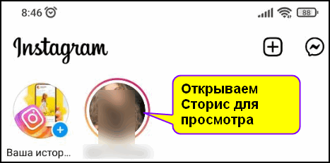
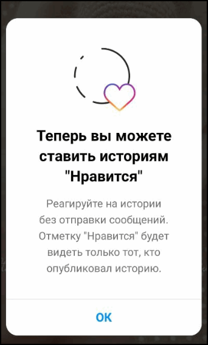
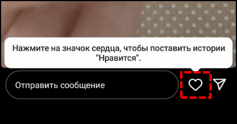
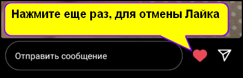
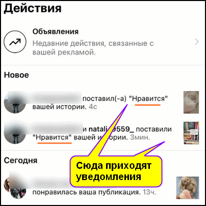
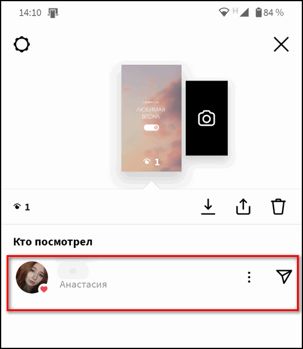
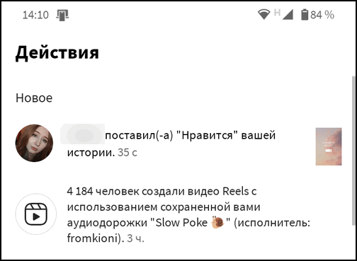

Как поставить лайк на Историю в Инстаграм

В начале 2022 года Instagram* выкатил новую функцию: ставить лайки на Stories, она постепенно становится доступна для всех устройств и стран.
Где находится кнопка лайка Сторис
Для того, чтобы лайкнуть чужую Историю в Инстаграм*:
- Открываем приложение и переходим к просмотру.

- Если у вас появилась эта функция, то выйдет окошко с информацией: «Теперь вы можете ставить Нравится».

- Далее просто нажмите на Сердечко, которое расположено рядом с полем для отправки сообщения.

- Свой лайк можно отменить, нажав еще раз на ту же кнопку.

- Уведомления о том, что кто то оставил Лайк на вашу Сторис придет в раздел «Действия».

Реагируйте на Сторис без отправки сообщений, отметку «Нравится» увидит только автор, который выложил временную Stories в Инстаграм*.
Примечательно, что счетчика никакого пока не предусмотрено, автору просто приходит уведомление, где он увидит, кто оценил его Историю.
Если нет функции: как включить
Причиной, почему новая функция может отсутствовать в профиле, является отсутствие обновлений для приложения или самой операционной системы.
Что делать, чтобы получить опцию:
- Зайти в Play Market – вписать в поиске: «Инстаграм*».
- Рядом со значком появится: «Обновить».
- Подождать, пока будет установлена новая версия.
Которая есть в дополнительном меню Play Market:
- Зайти на страницу приложения.
- Сверху нажать три точки – автоматические обновление.
Влияют ли лайки на статистику в Инстаграме*
Лайки, как и другие взаимодействия с Историями, будут отображены в статистике. Также, владелец профиля увидит тех, кто поставил оценку в разделе: «Уведомления» -> рядом с аватаркой появится значок в виде сердечка.

Как посмотреть лайки в Истории Инстаграма*:- Зайти в социальную сеть – нажать по размещенной Истории.
- Снизу «Статистика» - Взаимодействия.
- Посмотреть, какое количество действий было выполнено в общем.

Но такие действия доступны только для владельцев аккаунтов «Бизнес» или «Автор». Если пользователь подключил профессиональный аккаунт после загрузки Сторис, то статистика не появится.